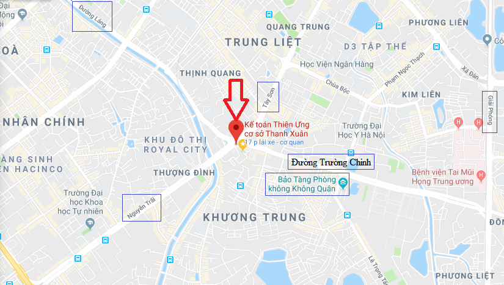
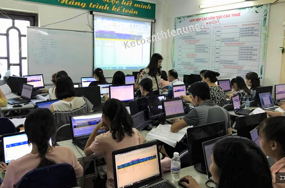
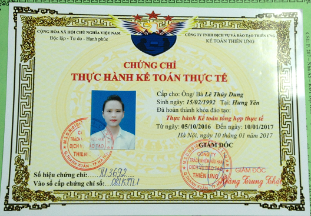

Kế toán Diệu Tâm cơ sở Thanh Xuân là 1 địa chỉ học kế toán ở Thanh xuân - Hà Nội uy tín: Các khóa học kế toán thực hành tại Thanh Xuân dạy thực hành trực tiếp trên hóa đơn, chứng từ thực tế. Cam kết dạy đến khi làm được việc mới thôi.
Địa chỉ học kế toán thực hành tại Thanh Xuân, Hà Nội:
- Phòng 3A (Tầng 3), Chung cư 39, Số19 Nguyễn Trãi, Thanh Xuân, Hà Nội
(Giữa Ngã Tư Sở – Giao cắt giữa Nguyễn Trãi và Trường Chinh).
ĐT: 0777.315.188 (Zalo)

Địa chỉ Kế toán Diệu Tâm Thanh xuân bản đồ Google map:
- Với vị trí địa lý như trên, những bạn muốn học kế toán thực hành ở Đống Đa, Ba Đình, Hai Bà Trưng, Nam Từ Liêm, Thanh Trì... có thể qua Kế toán Diệu Tâm cơ sở Thanh Xuân cũng thuận tiện trong việc đi lại.
-----------------------------------------------------------------------
=> Các thủ tục với cơ quan thuế, cơ quan BHXH, cơ quan Lao động thương binh xã hội, xử lý hóa đơn, chứng từ, Tính lương - BHXH cho nhân viên, Tính thuế kê khai thuế GTGT, TNCN hàng tháng (Qúy), hạch toán vào sổ sách kế toán, cân đối lãi lỗ, kết chuyển; Lập Báo cáo tài chính, lập Tờ khai Quyết toán thuế TNCN, TNDN cuối năm ...
- Tùy vào nhu cầu học tập của các bạn học viên (như: học để biết, học để làm thực tế, học để lên được BCTC, Quyết toán thuế cuối năm, học để quản lý bộ máy kế toán ....) và tùy vào trình độ kế toán của các bạn (như: Chưa học về kế toán, học rồi nhưng quên hết, mới tốt nghiệp kế toán, đang làm kế toán nội bộ...)
=> Khi đến với Kế toán Diệu Tâm chúng tôi sẽ có những khóa học khác nhau phù hợp với mong muốn của các bạn, cụ thể như sau:
Các Khóa học kế toán thực hành tại Thanh Xuân:
|
1. Khóa học Nguyên lý - Nghiệp vụ kế toán: - Tìm hiểu Hệ thống tài khoản kế toán, sổ sách, báo cáo kế toán … - Tìm hiểu những Luật Thuế - Luật kế toán mới nhất hiên hành. - Cách định khoản, hạch toán các nghiệp vụ kinh tế phát sinh như: Mua hàng, bán hàng, xuất nhập kho, Lương, BHXH, TSCĐ, Công cụ dụng cụ, Doanh thu, chi phí, các bút toán kết chuyển cuối kỳ… - Tìm hiểu quy trình làm sổ sách kế toán, lên Báo cáo tài chính … Số buổi học: 9 buổi Học phí: 1.100.000 (Giảm 200k Còn 900.000) |
|
2. Khóa học kê khai Thuế - Quyết toán thuế: - Cập nhật các thông tư, luật thuế mới nhất hiện hành. - Cách đăng ký thuế ban đầu, hóa đơn, đăng ký MST cá nhân, đăng ký người phụ thuộc … - Thực hành viết hóa đơn, xử lý khi viết sai. - Tính thuế, kê khai thuế GTGT, TNCN hàng tháng (Qúy), Báo cáo sử dụng hóa đơn, cách kê khai điều chỉnh bổ sung khi có sai sót. - Cách xác định các khoản Chi phí được trừ, không được trừ. - Cách lập Tờ khai quyết toán thuế TNCN, TNDN... Kỹ năng quyết toán thuế. Số buổi học: 17 buổi. Học phí: 2.000.000 (Giảm 200k Còn 1.800.000) => Chi tiết về nội dung khóa học, học phí … xem tại đây nhé: |
|
3. Khóa học lên Báo cáo tài chính trên Excel: - Thực hành hạch toán các nghiệp vụ vào sổ sách kế toán Excel như: Mua, bán hàng hóa, Lương, BHXH, tính khấu hao TSCĐ, phân bổ công cụ dụng cụ - chi phí trả trước. - Dùng các hàm để lên các Sổ và Bảng như: Bảng nhập xuất tồn, Tổng hợp công nợ, Sổ cái, Sổ quỹ tiền mặt, tiền gửi ngân hàng ... - Thực hành tính giá thành dịch vụ. - Thực hành các bút toán kết chuyển cuối kỳ: Hạch toán tiền lương và khoản trích BHXH, phân bổ chi phí, trích khấu hao TSCĐ, kết chuyển thuế GTGT ... - Thực hành lập Báo cáo tài chính, cách kiểm tra, đối chiếu sổ sách, đọc và phân tích Báo cáo tài chính... - Loại hình Doanh nghiệp: Thương mại, Dịch vụ, Xuất nhập khẩu. Số buổi học: 10 buổi. Học phí: 1.200.000 (Giảm 200k Còn 1.000.000) => Chi tiết về nội dung khóa học, học phí … bạn xem tại đây nhé: |
|
4. Khóa học phần mềm kế toán Misa: - Khóa học phần mềm Misa cũng có quy trình như khóa Excel bên trên -> Cũng hạch toán vào sổ sách, lương, BHXH, TSCĐ, Tính giá thành sản phẩm, kết chuyển … -> lên Báo cáo tài chính, cách kiểm tra, đối chiếu sổ sách, đọc và phân tích Báo cáo tài chính... -> Nhưng sẽ được thực hành làm cho loại hình Doanh nghiệp: Sản xuất. Số buổi học: 11 buổi. Học phí: 1.300.000 (Giảm 200k Còn 1.100.000) => Chi tiết về nội dung khóa học, học phí … bạn xem tại đây nhé: |
|
5. Khóa học thực hành kế toán tổng hợp (Dành cho người đã học kế toán – Người biết định khoản, hạch toán): - Dạy: Thực hành hạch toán, lên sổ sách, lương, BHXH, TSCĐ, CCDC, xử lý hóa đơn - chứng từ, kê khai thuế GTGT, TNCN hàng tháng (Qúy), kết chuyển … -> Lập Báo cáo tài chính, Lập Tờ khai Quyết toán thuế TNCN, TNDN. Kỹ năng Quyết toán thuế, Phân tích BCTC. -> Cụ thể là gồm 3 khóa nhỏ bên trên: Khóa thuế, Excel và Misa. Số buổi học: 38 buổi. Học phí: 4.000.000 (Chưa giảm, khuyến mãi chi tiết xem bên dưới) => Chi tiết về nội dung khóa học, học phí khuyến mãi … bạn xem tại đây nhé: |
|
6. Khóa học kế toán cho người mới bắt đầu (Hoặc mất gốc): - Dạy: Cách định khoản, hạch toán, Xử lý các nghiệp vụ kế toán thực tế. Thực hành hạch toán, lên sổ sách, lương, BHXH, TSCĐ, CCDC, xử lý hóa đơn - chứng từ, kê khai thuế GTGT, TNCN hàng tháng (Qúy), kết chuyển … -> Lập Báo cáo tài chính, Lập Tờ khai Quyết toán thuế TNCN, TNDN. Kỹ năng Quyết toán thuế, Phân tích BCTC. -> Cụ thể là gồm 4 khóa nhỏ bên trên: Khóa Nguyên lý, Khóa thuế, Excel và Misa. (Nếu bạn đăng ký khóa 6 sẽ học hết các phần của khóa 5) Số buổi học: 47 buổi. Học phí: 5.000.000 (Chưa giảm, khuyến mãi chi tiết xem bên dưới) => Chi tiết về nội dung khóa học, học phí khuyến mãi … bạn xem tại đây nhé: |
------------------------------------------------------------------------------------------
Phương pháp dạy học kế toán thực hành thực tế:
- Dạy thực hành toàn bộ trên hóa đơn, chứng từ thực tế (phát miễn phí) -> Học tập trung theo lớp tại trung tâm -> Giáo viên sẽ hướng dẫn trên máy chiếu, học viên bên dưới thực hành trên máy tính.
Cam kết: Dạy tới khi bạn làm được việc mới thôi, không giới hạn số buổi học, học phí không phát sinh thêm.
Ví dụ: Bạn đăng ký Khóa học kế toán thực hành tổng hợp (dành cho người đã học kế toán), thời gian 28 buổi -> Học xong khoảng thời gian trên mà bạn chưa làm được việc: => Thì có thể đăng ký học lại mà không mất thêm phí.
- Trong quá trình học, bạn có việc bận phải nghỉ: -> Thì gọi điện báo cho Trung tâm để được sắp xếp học bù, học lại buổi hôm đó.

(Hình ảnh lớp học kế toán thực hành ở Thanh Xuân)
Ca học: 1 tuần học 3 buổi: 2,4,6 hoặc 3,5,7.
(Bạn nào muốn học cấp tốc thì học 1 tuần 6 buổi: Từ thứ 2 - thứ 7).
- 1 ngày có 3 ca: Ca sáng: 8h30 - 11h; Ca Chiều từ 14h - 16h30; Ca Tối từ 18h - 20h30.
Một lớp học khoảng từ 10 - 20 người, mỗi người 1 máy tính thực hành.
Tài liệu học, máy tính đã được trung tâm trang bị đầy đủ.
Giảng viên là những kế toán tổng hợp, kế toán trưởng đã và đang đi làm thực tế tại các Doanh nghiệp.
Lịch khai giảng: Các lớp khai giảng hàng tuần nhé, bạn đăng ký xong sau khoảng từ 2- 5 ngày sẽ đi học được nhé.
- Hoặc bạn có thể xem lịch khai giảng dự kiến tại Góc trên bên trái website nhé.
------------------------------------------------------------------------------------------------
Hỗ trợ trong quá trình học và sau khi học xong:- Tặng phần mềm kế toán như: Excel, Misa, HTKK.
- Hỗ trợ giải đáp các vướng mắc trong quá trình đi làm sau này.
- Tặng khóa học "Kỹ năng Quyết toán thuế, giải trình thuế"
- Hỗ trợ đóng dấu xác nhận thực tập (nếu bạn là sinh viên cần nơi thực tập)
- Cấp chứng chỉ kế toán thực hành thực tế.

(hình ảnh mẫu chứng chỉ kế toán thực hành thực tế tại Kế toán Diệu Tâm)
-------------------------------------------------------------------------
Hotline: 0777.315.188
Zalo: 0777315188
Email: Ketoandieutam@gmail.com
Zalo: 0777315188
Email: Ketoandieutam@gmail.com
---------------------------------------------------------------------
Ngoài Kế toán Diệu Tâm cơ sở Thanh Xuân, trung tâm còn có các Địa chỉ học kế toán ở Cầu Giấy, Hà Đông, Định Công (Hoàng Mai), Long Biên, Quận 3 TP. HCM, Quận Thủ Đức TP. Hồ Chí Minh...
Chi tiết xem tại đây nhé: Địa chỉ học kế toán Diệu Tâm
Chi tiết xem tại đây nhé: Địa chỉ học kế toán Diệu Tâm
---------------------------------------------------------------------